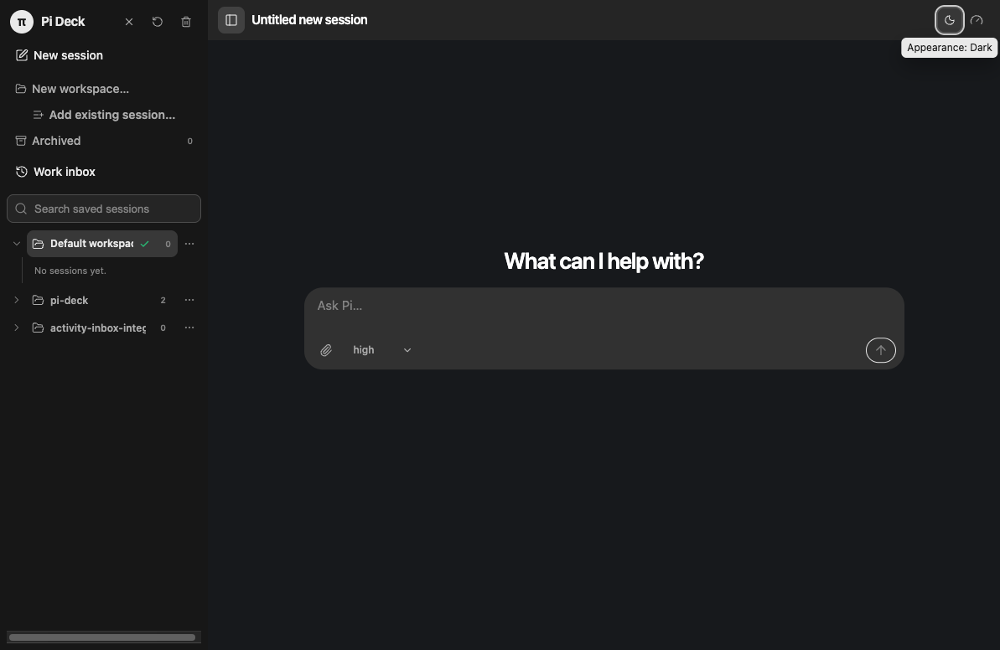
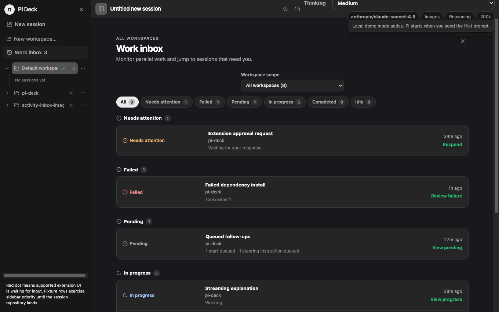
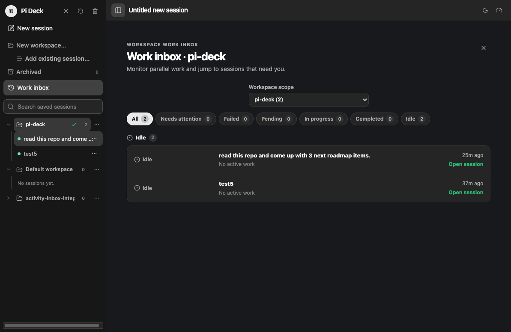
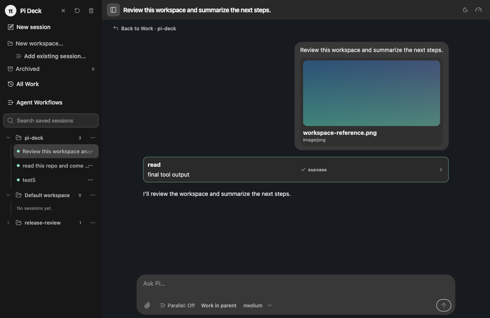
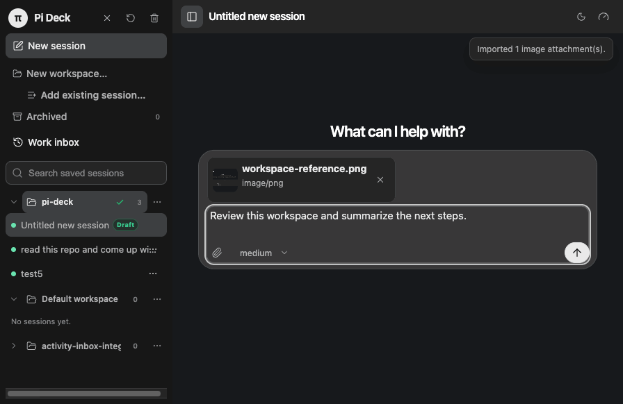
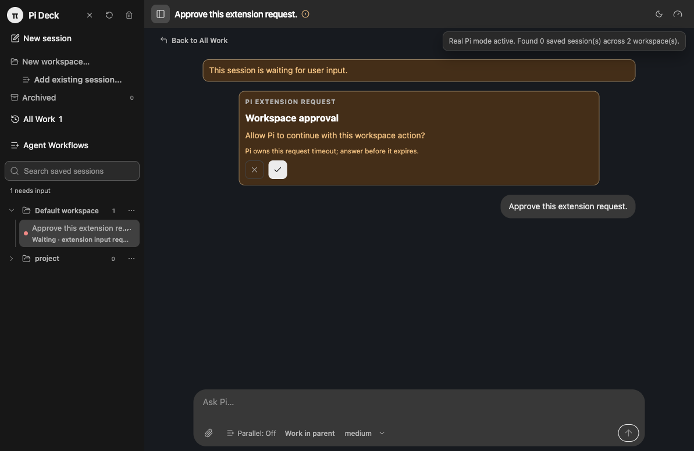
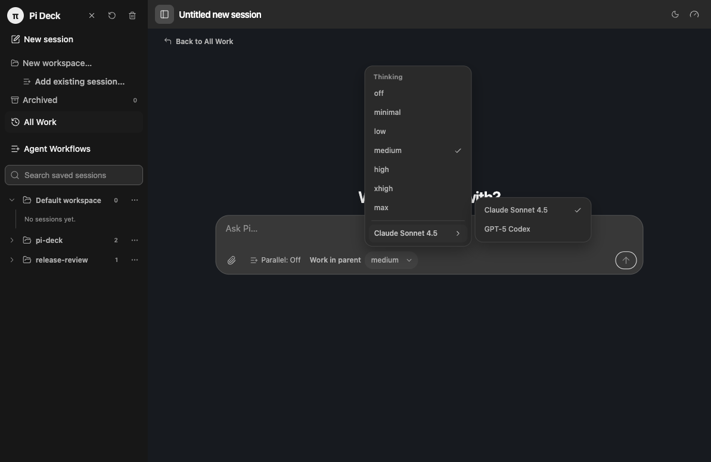
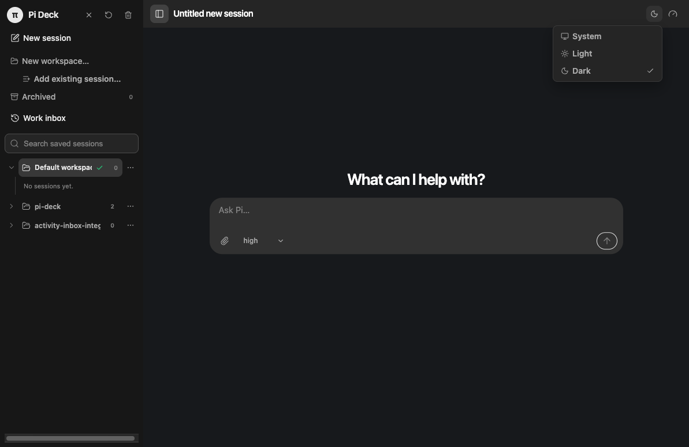

01
Organize by workspace
Create named workspaces for projects, clients, experiments, or any other way you divide your work. Select a workspace to see its sessions, independent of the folders they use.
{kind=link}

A local workspace for agentic development
Pi Deck gives Pi a focused local control plane: create named workspaces, run reusable Agent Workflows, delegate parallel work, and use the Work inbox to see what needs attention without juggling terminal windows.
Active pre-release MVP · macOS · runs locally from source
Built around Pi
Organize the work, find what needs attention, build explicit workflows, and intervene at the right moment—all while Pi remains the local agent runtime.
Create named workspaces for projects, clients, experiments, or any other way you divide your work. Select a workspace to see its sessions, independent of the folders they use.

Use the global Work inbox to scan every workspace, or scope it to the workspace you are in. Filter by needs attention, failed, pending, in progress, completed, or idle.


Resume Pi JSONL sessions and use the models, provider authentication, resources, commands, and settings you already configured. Model-backed workflow roles use Pi sessions too.

Steer an active turn, queue a follow-up, answer extension requests, retry failed prompts, or abort work while other workers continue in the background.


Create reusable global or workspace-scoped workflows with Worker, Decider, Orchestrator, and Human roles. Use a visual builder or canonical JSON, then follow a live, accessible execution graph with retries, handoffs, and Pi-session drill-in.
Enable parallel multitasking for a parent conversation when Pi should delegate substantive independent work. Pi Deck queues and monitors local child tasks, then returns their status and handoff to the parent—without exposing child conversations as separate controls.
Secondary controls
These supporting preferences sit outside the core workflow: choose Pi’s thinking level or model, and set the interface appearance.


How it works
Choose a named workspace for related sessions and workflow definitions. Add existing Pi sessions or open a project folder when you are ready to start one.
Use a local pi --mode rpc worker for ad-hoc work, or start a reusable Agent Workflow when the work needs explicit roles, decisions, loops, fan-out, or a Human checkpoint.
Use the Work inbox for sessions, or a live workflow graph for routes, retries, fan-out and loop activity. Open an associated Pi session when you need to steer the work.
Enable parallel multitasking on a parent conversation to let Pi delegate independent local child tasks. Their status and completed handoff stay with the parent.
Get started
Pi Deck is currently a macOS Electron pre-release. You will need Node.js 22.12+, npm, and a working Pi executable with its normal provider authentication configured.
Read the setup guidegit clone https://github.com/LiusuZeng/pi-deck.git
cd pi-deck
npm ci
npm run build
npm run deck:real -- /absolute/path/to/your/projectPrivacy and boundaries
Pi Deck has no hosted backend and does not sync application data. Pi-owned JSONL files remain the source of truth for conversations; Pi Deck stores local metadata for workspaces, workflow definitions and runs, and delegated-task status.
Pi itself may contact configured model providers or run network-capable tools according to your Pi settings and environment.
Read the privacy detailsFAQ
Yes. Pi Deck is a local macOS desktop GUI and control plane for Pi coding-agent sessions. It complements Pi’s CLI workflow rather than replacing Pi itself.
A workspace is a named way to organize Pi sessions. It is independent of the folders those sessions use, so you can group work by project, client, topic, or any other context. A default workspace keeps ungrouped sessions discoverable.
Yes. Each attached conversation has an independent local Pi worker. The Work inbox lets you monitor sessions across every workspace or narrow the view to one workspace and a status.
An Agent Workflow is a reusable, explicit execution graph. Combine Worker, Decider, Orchestrator, and Human roles to route work, make decisions, run bounded loops or fan-out work, and pause for input when needed.
Workflows are saved orchestration definitions that you start and monitor. Parallel multitasking is an opt-in mode for one parent Pi conversation: Pi can delegate independent child tasks, while their status and handoff remain parent-facing.
Yes. Pi Deck is a local Electron desktop app with no Pi Deck-hosted backend. Pi’s own configured providers and tools retain their usual behavior.
Not yet. Pi Deck is an active pre-release MVP that currently runs from source on macOS.
{kind=link}
{kind=link}
{kind=link}
{kind=link}
{kind=link}
{kind=link}
{kind=link}